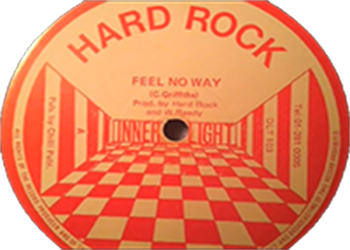
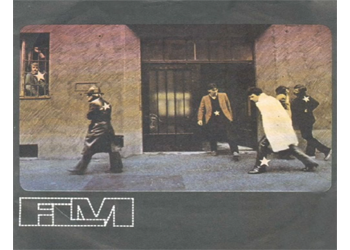

Crypt Library.
Crypt Resources.
Crypt Home.
Crypt Writer.
Submission Guide .
Classic Music Player:

Your browser does not support the audio element.
Feel no way - Hard Rock (1983)

Your browser does not support the audio element.
ZAJEDNO - FILM (1980)